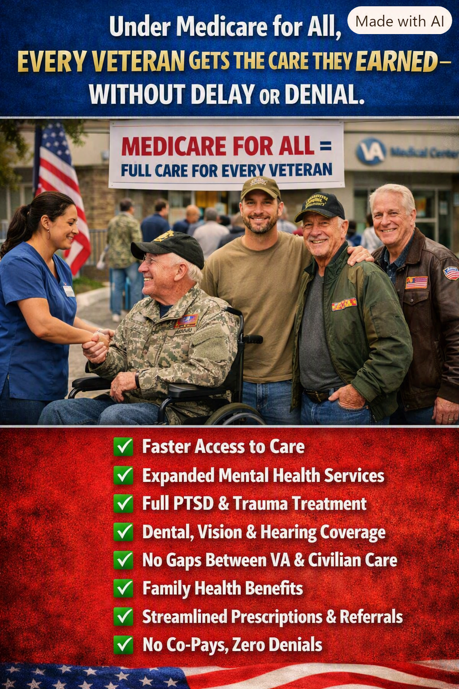

Article 40: Every Veteran Deserves the Care They Earned
Strengthening healthcare for veterans and their families

Download illustrated Word document (.docx)
How universal healthcare could strengthen veterans’ access to treatment while preserving the VA’s specialized mission
Illustration: A vision of comprehensive healthcare for veterans. The policy outcomes shown are goals, not guarantees under current law.
A promise that should follow veterans everywhere
Serving in the armed forces should never mean spending the years afterward navigating gaps between healthcare systems. Veterans may need treatment for service-related injuries, post-traumatic stress, chronic pain, hearing loss, dental problems, or illnesses that emerge decades after leaving uniform. They also need the same everyday medical care as everyone else. Access should be based on clinical need—not on which program pays, where a veteran lives, or whether a referral was approved in time.
Medicare for All offers a compelling idea: every resident, including every veteran and family member, would have a dependable foundation of comprehensive health coverage. But that promise must be implemented carefully. Universal coverage would not, by itself, eliminate provider shortages, waiting lists, or inappropriate denials. Nor should it dismantle the Veterans Health Administration’s expertise in military-related conditions.
What veterans could gain
Coverage that travels with the person. A veteran should be able to obtain medically necessary care whether living near a VA medical center, in a rural community, or moving to a new state. A national coverage framework could reduce insurance-related discontinuity.
Mental health and trauma care. PTSD treatment, counseling, substance-use treatment, suicide prevention, and long-term recovery services should be accessible without financial barriers. Timely appointments and a trained workforce remain essential.
Comprehensive benefits. Dental, vision, hearing, prescriptions, rehabilitation, and medically necessary specialty services should be included in a well-designed program, rather than treated as optional extras.
Less paperwork and fewer financial surprises. Removing patient copayments and deductibles for covered care could simplify access and reduce medical debt. Clinical review for safety and appropriateness may still be needed; “zero denials” is not a realistic or responsible guarantee.
Protect the VA—do not replace its strengths
The VA provides more than insurance: it delivers care, conducts research, trains clinicians, and offers specialized programs for spinal cord injury, prosthetics, traumatic brain injury, military sexual trauma, and other needs. Medicare for All should complement and adequately fund those services. Veterans should retain access to VA facilities and specialized teams, while having workable pathways to community providers when appropriate.
A successful transition would require clear coordination of records, referrals, prescriptions, emergency care, and follow-up. It would also require safeguards so that veterans do not lose benefits or face new administrative obstacles during a changeover.
Families deserve security, too
Spouses, children, caregivers, and surviving family members can face their own coverage gaps. Universal coverage could give them continuous protection regardless of employment, marital transitions, or eligibility for a particular veterans’ family program. That stability matters to the veteran as well as the household.
What reform must actually deliver
Reliable appointment access, with measurable wait-time standards and sufficient clinicians.
Strong VA funding, protected specialty programs, and coordination with community care.
Comprehensive medically necessary benefits, including behavioral health, prescriptions, dental, vision, and hearing.
No premiums, deductibles, or copays for covered care under the proposed single-payer model, with transparent rules and appeals.
Special attention to rural veterans, disabled veterans, unhoused veterans, and military families.
A debt of gratitude should be a commitment to care
Veterans should not have to prove their worth each time they seek medical attention. A country that asks people to serve must build a healthcare system that serves them in return. Medicare for All could be part of that answer—provided we strengthen the VA, invest in capacity, and judge success by whether veterans receive timely, effective treatment.
The goal is simple: no veteran left without care, and no veteran forced to choose between treatment and financial security.
Policy note: This article describes proposed universal healthcare reforms, not benefits currently guaranteed by Medicare or the VA. Specific coverage and financing depend on legislation and implementation.
Share This Article
Help others explore the ideas and evidence behind Medicare for All.
When posting on Facebook, paste these hashtags into your post text. Sharing services may not automatically include them.